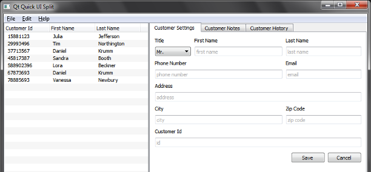

Qt Quick Controls 1 - UI Forms
Demonstrates how to separate the application logic from the UI.
Warning: The Qt Quick Controls 1 module is deprecated since Qt 5.12. Use the latest Qt Quick Controls module instead.

UI Forms demonstrates how to separate the application logic from the UI using ui.qml files. The example is a simple interface to a customer database, purely written in QML and JavaScript.
UI Forms are rigorously split into .qml and .js files that contain the business logic, and .ui.qml files that only contain the purely declarative description of the UI. The .ui.qml files act as forms and they should be only edited in the Design mode of Qt Creator.
Exporting Items from Forms
In all forms, items that are supposed to interact with the application logic are exported:
property alias cancel: cancel property alias save: save property alias textArea: textArea
This is the way the items are exported in NotesForm.ui.qml, so they can be used in Notes.ui.qml to implement the logic as follows:
function readData() {
CustomerModel.selection.forEach(function (rowIndex) {
form.textArea.text = CustomerModel.model.get(rowIndex).notes
})
save.enabled = true
cancel.enabled = true
form.textArea.enabled = true
}
function writeData() {
CustomerModel.selection.forEach(function (rowIndex) {
var data = CustomerModel.model.get(rowIndex)
data.notes = form.textArea.text
CustomerModel.model.set(rowIndex, data)
})
}
cancel.onClicked: readData()
save.onClicked: writeData()
Implementing the Backend in a Singleton
Because the ListModel is accessed from several different .qml files, we access the ListModel through a singleton defined in CustomerModel.qml and registered in main.ccp. This way we do not have to rely on the QML context scoping rules to access the ListModel.
Running the Example
To run the example from Qt Creator, open the Welcome mode and select the example from Examples. For more information, visit Building and Running an Example.